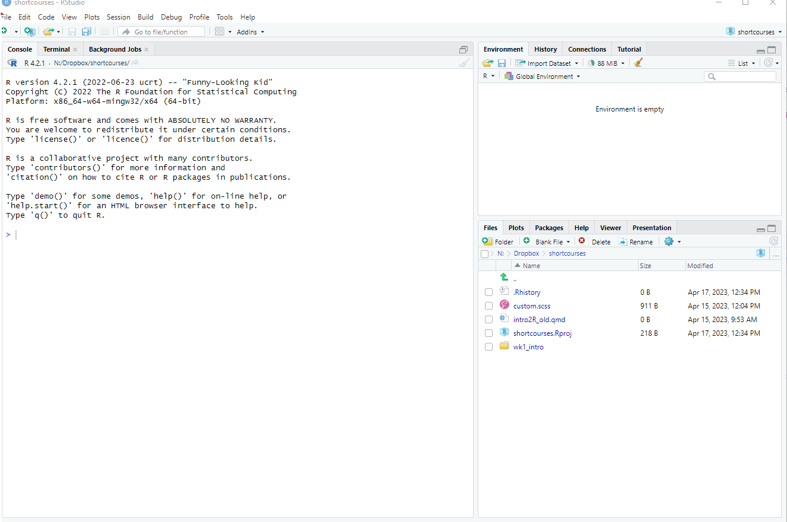
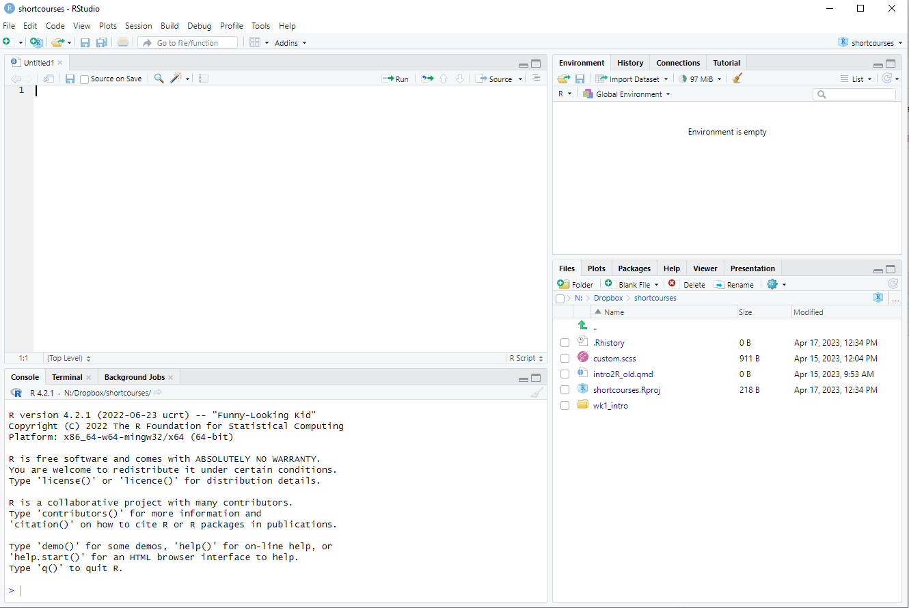
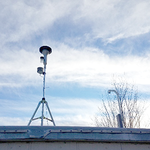
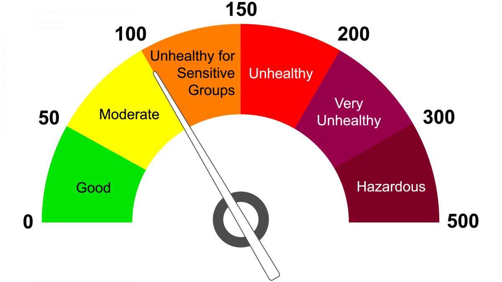
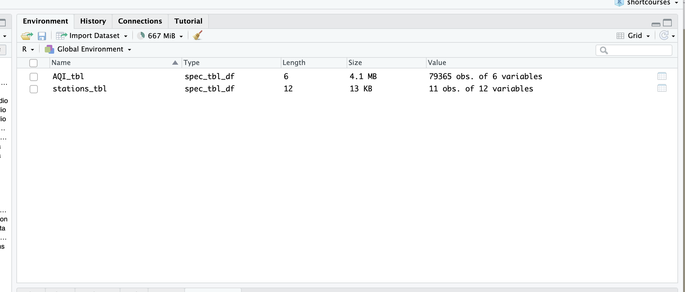
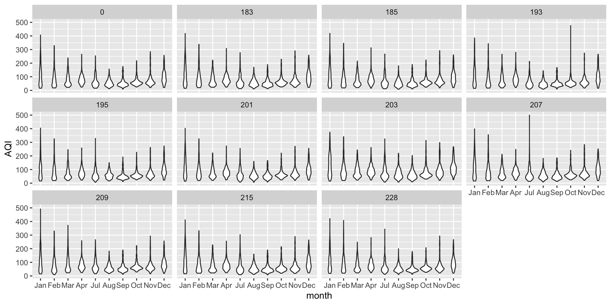

Introduction to Urban Analytics with R
4/20/23
Urban Analytics
Harmonising and analysing data from
- stationary sensors 🚥
- mobile sensors
- ground 🌍
- areal ✈️
- administrative 📜
- video 🎥
in the service of urban sustainability, resilience, health …
Today’s plan
- What is R? What is Rstudio?
- What is tidyverse?
- Basic functions for manipulating data
- Using R effectively
- More data manipulation
- A peek at next week
What is R? What is Rstudio ?
1 2 3 4 5 6
What is R?
1 2 3 4 5 6
R is an open-source (free!) scripting language for working with data.
It started out as a statistical analysis language but is so much more now.
Getting R & Rstudio
1 2 3 4 5 6
You need the R language
And also the Integrated Development Environment
Navigating RStudio
1 2 3 4 5 6

project files are here.
Visualisations show up here
imported data shows up here
code can go here
Navigating RStudio
1 2 3 4 5 6

project files are here
imported data shows up here
code can also
go here
What is tidyverse?
1 2 3 4 5 6
Using R with tidyverse
1 2 3 4 5 6
You use R via packages
…which contain functions
…which are just verbs

Tidyverse is a collection of R packages designed to work around a common philosophy.
Best way to learn the tidyverse

http://r4ds.had.co.nz/
Rectangular Data

Rectangular Data
- Put each dataset in a tibble.
- Put each variable in a column.
- Each column should be a data type (integer, boolean, date, character etc.)
- Each row is ‘nominally’ independent of another row
- Each column is ‘nominally’ independent of another column
Today’s data
1 2 3 4 5 6
 
Real Time AQI is published by the Shanghai Environmental Monitoring Center (SEMC).
Today’s data
1 2 3 4 5 6
AQI_tbl
| TIME | SITEID | AQI | GRADE | AIRQUALITY | PPITEMID |
|---|---|---|---|---|---|
| 2014/7/1 0:00 | 201 | 78 | 2 | 良 | 9 |
| 2014/7/1 0:00 | 209 | 84 | 2 | 良 | 9 |
| 2014/7/1 0:00 | 185 | 69 | 2 | 良 | 9 |
| 2014/7/1 0:00 | 203 | 73 | 2 | 良 | 9 |
| 2014/7/1 0:00 | 215 | 73 | 2 | 良 | 9 |
| 2014/7/1 0:00 | 0 | 69 | 2 | 良 | 9 |
Contains 79365 observations with 6 variables.
Today’s data
1 2 3 4 5 6
stations_tbl
| SITEID | SITENAME | ORDERID | ISCITY | ISDISTRICT | ISNATIONAL | ISACTIVE | SITENAMEEN | ADDRESS | ISPUBLIC | LON | LAT |
|---|---|---|---|---|---|---|---|---|---|---|---|
| 215 | 虹口凉城 | 5 | -1 | -1 | -1 | -1 | Hongkou Liangcheng | 虹口区凉城路854号凉城社区卫生中心 | -1 | 121.4718 | 31.29878 |
| 201 | 普陀监测站 | 1 | -1 | -1 | -1 | -1 | Putuo Station | 普陀区杏山路317号曹杨社区文化中心 | -1 | 121.4060 | 31.23642 |
| 209 | 杨浦四漂 | 2 | -1 | -1 | -1 | -1 | Yangpu Sipiao | 杨浦区平凉路1398号 | -1 | 121.5381 | 31.26435 |
Contains 10 observations with 12 variables.
Today’s data
1 2 3 4 5 6
AQI_tbl
| variable | type | na_pct | unique |
|---|---|---|---|
| TIME | chr | 0 | 7215 |
| SITEID | dbl | 0 | 11 |
| AQI | chr | 0 | 365 |
| GRADE | chr | 0 | 7 |
| AIRQUALITY | chr | 0 | 7 |
| PPITEMID | chr | 0 | 7 |
stations_tbl
| variable | type | na_pct | unique |
|---|---|---|---|
| SITEID | dbl | 0 | 10 |
| SITENAME | chr | 0 | 10 |
| ORDERID | dbl | 0 | 10 |
| ISCITY | dbl | 0 | 2 |
| ISDISTRICT | dbl | 0 | 1 |
| ISNATIONAL | dbl | 0 | 1 |
| ISACTIVE | dbl | 0 | 1 |
| SITENAMEEN | chr | 0 | 10 |
| ADDRESS | chr | 0 | 10 |
| ISPUBLIC | dbl | 0 | 1 |
| LON | dbl | 0 | 10 |
| LAT | dbl | 0 | 10 |
Today’s data
1 2 3 4 5 6
Today’s data
1 2 3 4 5 6
Useful operators & keyboard shortcuts
1 2 3 4 5 6
<-
“assign to”
Opt + -(Mac)Alt + -(Windows/linux)
%>%
“and then”
Cmd + shift + m(Mac)Cntrl + shift + m(Windows/Linux)
Syntax of a function
1 2 3 4 5 6
function(object, argument(s))
is the same as
object %>%
function(argument(s))
Read external data
is the same as
AQI_tbl
| TIME | SITEID | AQI | GRADE | AIRQUALITY | PPITEMID |
|---|---|---|---|---|---|
| 2014/7/1 0:00 | 201 | 78 | 2 | 良 | 9 |
| 2014/7/1 0:00 | 209 | 84 | 2 | 良 | 9 |
| 2014/7/1 0:00 | 185 | 69 | 2 | 良 | 9 |
| 2014/7/1 0:00 | 203 | 73 | 2 | 良 | 9 |
| 2014/7/1 0:00 | 215 | 73 | 2 | 良 | 9 |
| 2014/7/1 0:00 | 0 | 69 | 2 | 良 | 9 |
Basic data manipulation
1 2 3 4 5 6
Common functions
1 2 3 4 5 6
mutate creates new columns (aka variables) or modify existing columns
filter keeps or discards rows (aka observations)
select keeps or discards columns
arrange sorts data set by certain variable(s)
count tallies data set by certain variable(s)
group_by/summarize aggregates data (pivot tables!)
str_* functions work easily with text
ymd* functions work easily for date/time
Mutate
1 2 3 4 5 6
mutate can modify existing columns
Mutate
1 2 3 4 5 6
can create new variables
the pipe %>% chains multiple functions together
| TIME | month_of_obs | SITEID | AQI |
|---|---|---|---|
| 2014-07-01 | Jul | 201 | 78 |
| 2014-07-01 | Jul | 209 | 84 |
| 2014-07-01 | Jul | 185 | 69 |
| 2014-07-01 | Jul | 203 | 73 |
| variable | type |
|---|---|
| TIME | dat |
| SITEID | dbl |
| AQI | chr |
| GRADE | chr |
| AIRQUALITY | chr |
| PPITEMID | chr |
| month_of_obs | fct |
A digression into factors
1 2 3 4 5 6
Factors are categorical variables.
Sometimes what show up as characters or numbers should be factors
Mutate
1 2 3 4 5 6
with& (AND), | (OR) there is enormous flexibility
AQI_tbl %>%
mutate(TIME = lubridate::ymd_hm(TIME)) %>%
mutate(month_of_obs = month(TIME)) %>%
mutate(season = case_when(
month_of_obs >= 3 & month_of_obs < 6 ~ "spring",
month_of_obs >=6 & month_of_obs < 9 ~ "summer",
month_of_obs >=9 & month_of_obs < 12 ~ "autumn",
month_of_obs = 12 | month_of_obs <3 ~ "winter",
.default = "NA"
)
)| TIME | month_of_obs | season |
|---|---|---|
| 2014-07-01 | 7 | summer |
| 2014-07-01 | 7 | summer |
| 2014-07-01 | 7 | summer |
| 2014-07-01 | 7 | summer |
Filter
1 2 3 4 5 6
filter keeps or discards rows (aka observations)
the == operator tests for equality
| TIME | SITEID | AQI | GRADE | AIRQUALITY | PPITEMID |
|---|---|---|---|---|---|
| 2014/7/1 0:00 | 209 | 84 | 2 | 良 | 9 |
| 2014/7/1 1:00 | 209 | 79 | 2 | 良 | 9 |
| 2014/7/1 2:00 | 209 | 74 | 2 | 良 | 9 |
| 2014/7/1 3:00 | 209 | 74 | 2 | 良 | 9 |
| 2014/7/1 4:00 | 209 | 73 | 2 | 良 | 9 |
| 2014/7/1 5:00 | 209 | 79 | 2 | 良 | 9 |
Filter
1 2 3 4 5 6
is the same as
Why is 2 in " " but not 209?
| TIME | SITEID | AQI | GRADE | AIRQUALITY | PPITEMID |
|---|---|---|---|---|---|
| 2014/7/1 0:00 | 209 | 84 | 2 | 良 | 9 |
| 2014/7/1 1:00 | 209 | 79 | 2 | 良 | 9 |
| 2014/7/1 2:00 | 209 | 74 | 2 | 良 | 9 |
| 2014/7/1 3:00 | 209 | 74 | 2 | 良 | 9 |
| 2014/7/1 4:00 | 209 | 73 | 2 | 良 | 9 |
| 2014/7/1 5:00 | 209 | 79 | 2 | 良 | 9 |
Filter
1 2 3 4 5 6
the %in% operator allows for multiple options in a list
Select
1 2 3 4 5 6
select keeps or discards columns (aka variables)
Select
1 2 3 4 5 6
can drop columns with -column
Select
1 2 3 4 5 6
the pipe %>% chains multiple functions together
is the same as
is the same as
| TIME | SITEID | AQI | GRADE | AIRQUALITY |
|---|---|---|---|---|
| 2014/7/1 0:00 | 209 | 84 | 2 | 良 |
| 2014/7/1 1:00 | 209 | 79 | 2 | 良 |
| 2014/7/1 2:00 | 209 | 74 | 2 | 良 |
| 2014/7/1 3:00 | 209 | 74 | 2 | 良 |
| 2014/7/1 4:00 | 209 | 73 | 2 | 良 |
| 2014/7/1 5:00 | 209 | 79 | 2 | 良 |
Arrange
1 2 3 4 5 6
arrange sorts the dataset by certain variable(s)
Arrange
1 2 3 4 5 6
use desc to reverse the sort
Arrange
1 2 3 4 5 6
can sort by multiple variables
Count
1 2 3 4 5 6
count tallies data set by certain variable(s) (very useful for familiarizing yourself with data)
Count
1 2 3 4 5 6
can use sort = TRUE to order results
Group by / summarize
1 2 3 4 5 6
group_by/summarize aggregates data (pivot tables!)
group_by() identifies the grouping variable(s) and summarize() specifies the aggregation
| SITEID | min_AQI | max_AQI |
|---|---|---|
| 0 | 10 | 407 |
| 183 | 11 | 418 |
| 185 | 9 | 419 |
| 193 | 9 | 476 |
| 195 | 7 | 405 |
| 201 | 7 | 403 |
Group by / summarize
1 2 3 4 5 6
More complicated summary is easy with piping and other functions such as max, min, sum, n
AQI_tbl %>%
mutate(time_date = date(TIME))%>%
group_by(SITEID, time_date) %>%
summarise(max_AQI_day = max(AQI, na.rm=T)) %>%
ungroup() %>%
mutate(bad_airq_day = ifelse(max_AQI_day>100, 1, 0)) %>%
select(SITEID, bad_airq_day) %>%
group_by(SITEID) %>%
summarize(count_bad_airq_days = sum(bad_airq_day))| SITEID | count_bad_airq_days |
|---|---|
| 0 | 151 |
| 183 | 162 |
| 185 | 161 |
| 193 | 152 |
| 195 | 156 |
| 201 | 166 |
Using R effectively
1 2 3 4 5 6
Working in RStudio
1 2 3 4 5 6
project files are here
imported data shows up here
code can also
go here
Working in RStudio
1 2 3 4 5 6
Typing in the console
think of it like a post-it: useful for quick notes but disposable
actions are saved but code is not
one chunk of code is run at a time (
Return)
Typing in a code file
script files have a
.Rextensioncode is saved and sections of any size can be run (
Cmd + Return)do ~95% of your typing in a code file instead of the console!
Working with packages
1 2 3 4 5 6
packages need to be installed on each computer you use
packages need to be loaded/attached with library() at the beginning of every session
can access help files by typing ??tidyverse or ?mutate in the console
Organizing with projects
1 2 3 4 5 6
highly recommend using projects to stay organized
keeps code files and data files together, allowing for easier file path navigation and better reproducible work habits
Organizing with projects
1 2 3 4 5 6
project files are here
imported data shows up here
code can also
go here
Organizing with projects
1 2 3 4 5 6
.
└── my_awesome_project
├── my_awesome_project.Rproj
├── run_analyses.R
├── src
├── 01_first_script.R
└── 02_second_script.R
├── R
├── useful_function_1.R
└── useful_function_2.R
├── writing
├── 01_chapter.Rmd
├── output
├── data
├── raw
└── temp
└── processed
└──README.md
Always here
1 2 3 4 5 6
Jenny Bryan once said
If the first line of your R script is
setwd("C:\Users\jenny\path\that\only\I\have")
I will come into your office and SET YOUR COMPUTER ON FIRE 🔥.
If the first line of your R script is
rm(list = ls())
I will come into your office and SET YOUR COMPUTER ON FIRE 🔥.I will happily supply her the matches and fuel
Always here
1 2 3 4 5 6
instead use the here function in the here package
here converts the file path to
[1] "/Users/kaza/Library/CloudStorage/Dropbox/shortcourses/data/raw/AQI.csv"- which allows me to change computers, Operating Systems etc.
- don’t have to worry about “/” or “\”
Ask for help!
1 2 3 4 5 6
- use
?- help - use
??- help.search
Ask for help!
1 2 3 4 5 6

Ask for help! (Not like this)
1 2 3 4 5 6
I am importing fairly large csv’s (2 - 3 million rows). When I import these using read_csv, it fails. Anyone know why?
This question is missing the key information required to reproduce and troubleshoot the problem:
How is the datafile being imported delimited(csv(comma-delimited), other)?What operating system is involved(Linux, Windows)? What locale?What version of R running? What functions and libraries are being used?The post does not provide an example of the R code, with the data that led to the problem
Working with the data
1 2 3 4 5 6
Importing data
1 2 3 4 5 6
- Create and name a Project in Rstudio.
- Create the specified directory structure in explorer/finder
- Download the
AQI.csvandstations.csvto thedata/raw/subdirectory - Create a
01_my_first_script.Rwith in the src subdirectory and open it in Rstudio
Importing data
1 2 3 4 5 6
Type the following code into the R file and run it.
Importing data
1 2 3 4 5 6
If needed, use read_excel from the readxl package to read Excel files
Analysis Tasks
1 2 3 4 5 6
Find all outlier observations in AQI
Which stations are likely to have these?
Which month/season these outliers are likely to occur?
Do these outliers occur in the morning, afternoon or in the evening?
Does the definition of outlier matter?
For each station
Calculate the daily, weekly, monthly, seasonal summaries (mean, median, std. dev etc.)
How does temporal aggregation affect the air quality story?
More data manipulation
1 2 3 4 5 6
Joining data
1 2 3 4 5 6
R has many useful functions for handling relational data
all you need is at least one key variable that connects data sets
left_join is most common, but there are more


Joining data
1 2 3 4 5 6
| TIME | SITEID | AQI | GRADE | AIRQUALITY | PPITEMID | SITENAME | ORDERID | ISCITY | ISDISTRICT | ISNATIONAL | ISACTIVE | SITENAMEEN | ADDRESS | ISPUBLIC | LON | LAT |
|---|---|---|---|---|---|---|---|---|---|---|---|---|---|---|---|---|
| 2014/7/1 0:00 | 201 | 78 | 2 | 良 | 9 | 普陀监测站 | 1 | -1 | -1 | -1 | -1 | Putuo Station | 普陀区杏山路317号曹杨社区文化中心 | -1 | 121.4060 | 31.23642 |
| 2014/7/1 0:00 | 209 | 84 | 2 | 良 | 9 | 杨浦四漂 | 2 | -1 | -1 | -1 | -1 | Yangpu Sipiao | 杨浦区平凉路1398号 | -1 | 121.5381 | 31.26435 |
| 2014/7/1 0:00 | 185 | 69 | 2 | 良 | 9 | 卢湾师专附小 | 3 | -1 | -1 | -1 | -1 | Luwan Shizhuan | 卢湾区局门路478号 | -1 | 121.4818 | 31.20429 |
| 2014/7/1 0:00 | 203 | 73 | 2 | 良 | 9 | 青浦淀山湖 | 4 | 0 | -1 | -1 | -1 | Qingpu Dianshanhu | 青浦区淀峰渔民村1号 | -1 | 120.9820 | 31.08969 |
Joining data
1 2 3 4 5 6
right_join is all rows in y, all columns in x and y.

Joining data
1 2 3 4 5 6
inner_join is rows with matching values in x and y, and all columns from x and y.

Joining data
1 2 3 4 5 6
semi_join is rows with matching values in x and y, and only columns in x

Joining data
1 2 3 4 5 6
full_join returns all rows and all columns from both x and y.

Manipulating Strings
1 2 3 4 5 6
str_* are various useful functions when paired with regular expressions.
| SITEID | ADDRESS | street_number |
|---|---|---|
| 215 | 虹口区凉城路854号凉城社区卫生中心 | 854 |
| 201 | 普陀区杏山路317号曹杨社区文化中心 | 317 |
| 209 | 杨浦区平凉路1398号 | 1398 |
| 185 | 卢湾区局门路478号 | 478 |
| 203 | 青浦区淀峰渔民村1号 | 1 |
| 183 | 静安区武定西路1480号 | 1480 |
| 207 | 徐汇区桂林路100号上师大 | 100 |
| 193 | 浦东新区川环南路319号 | 319 |
| 228 | 浦东新区灵山路51号 | 51 |
| 195 | 浦东新区祖冲之路295号 | 295 |
Manipulating Strings
1 2 3 4 5 6
| SITEID | ADDRESS | count_numbers |
|---|---|---|
| 215 | 虹口区凉城路854号凉城社区卫生中心 | 3 |
| 201 | 普陀区杏山路317号曹杨社区文化中心 | 3 |
| 209 | 杨浦区平凉路1398号 | 4 |
| 185 | 卢湾区局门路478号 | 3 |
| 203 | 青浦区淀峰渔民村1号 | 1 |
| 183 | 静安区武定西路1480号 | 4 |
| 207 | 徐汇区桂林路100号上师大 | 3 |
| 193 | 浦东新区川环南路319号 | 3 |
| 228 | 浦东新区灵山路51号 | 2 |
| 195 | 浦东新区祖冲之路295号 | 3 |
Regular Expressions
1 2 3 4 5 6
Practise with https://regexone.com/
[abc] Only a, b, or c[^abc] Not a, b, nor c[a-z] Characters a to z[0-9] Numbers 0 to 9\w Any Alphanumeric character\W Any Non-alphanumeric character{m} m Repetitions{m,n} m to n Repetitions* Zero or more repetitions+ One or more repetitions? Optional character
A peek at next week
1 2 3 4 5 6

:::
A peek at next week
1 2 3 4 5 6